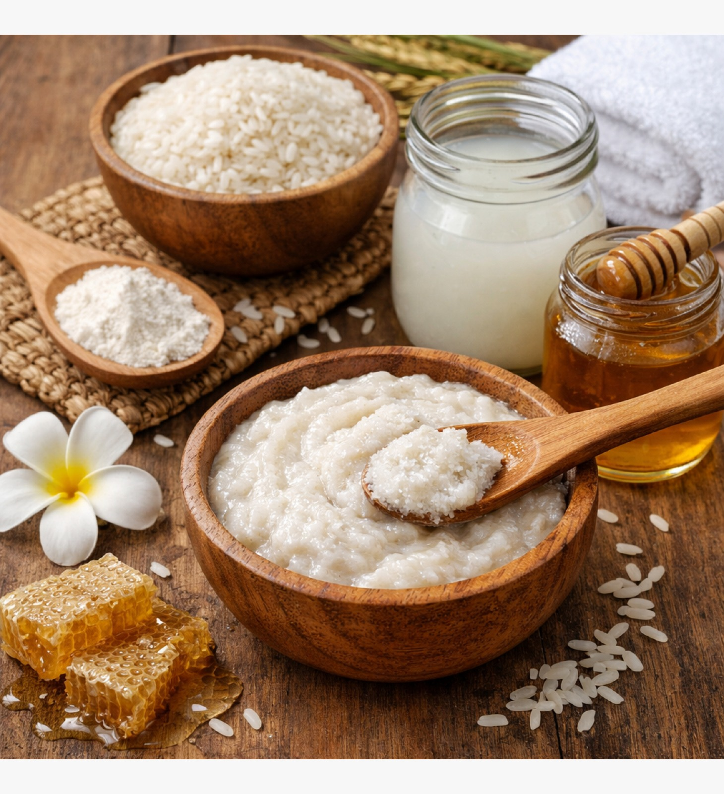
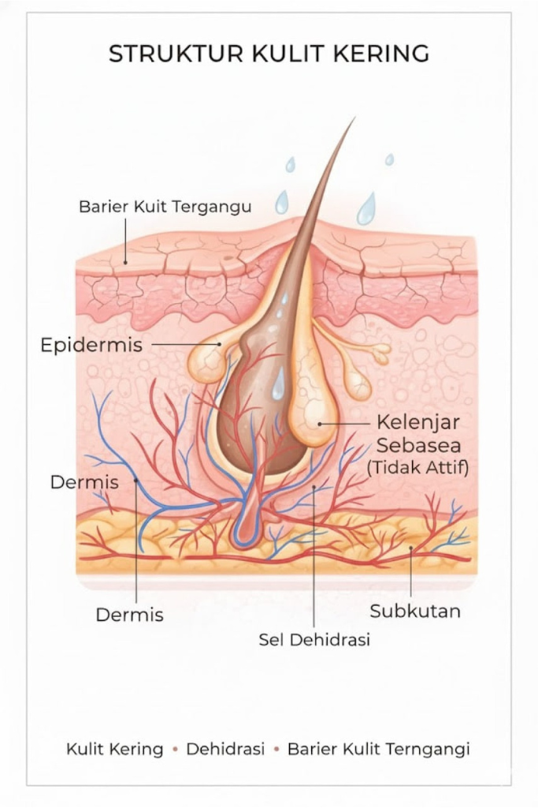

Tips Pola Hidup & Faktor Biologis
Pola hidup yang tepat membantu kulitmu tetap stabil, segar, dan bebas kilap

Berdasarkan jawabanmu, jenis kulitmu termasuk dalam kategori normal.
Kulit normal memiliki keseimbangan antara kadar minyak dan kelembapan sehingga terasa nyaman dan tidak mudah bermasalah. Tekstur kulit umumnya halus, pori-pori tidak terlalu terlihat, serta jarang mengalami iritasi.

Pilih kandungan yang sesuai kebutuhan kulitmu dan gunakan secara bertahap untuk hasil terbaik
Menjaga keseimbangan kulit, mendukung fungsi skin barrier, dan membuat tampilan kulit terasa lebih halus.
Membentuk lapisan pelindung ringan yang membantu mengunci kelembapan dan menjaga kulit tetap nyaman.
Mendukung proses eksfoliasi untuk membantu memperbaiki tekstur kulit agar tampak lebih cerah.
Membersihkan pori dan mengurangi penumpuka sel kulit mati secara lembut.
Mendukung regenerasi kulit dan membantu memperbaiki tampilan kulit secara bertahap.

Hindari penggunaan retinol bersamaan dengan AHA/BHA atau vitamin C dengan AHA/BHA karena dapat meningkatkan risiko iritasi, kulit kering, dan gangguan skin barrier. Selalu sesuaikan dengan toleransi kulit dan imbangi dengan pelembap.
Pilihan bahan herbal alami yang dapat mendukung rutinitas perawatan kulitmu

Gunakan lulur beras sebagai eksfoliator lembut untuk membantu mengangkat sel kulit mati, mencerahkan kulit, memberikan efek anti-aging, serta menjaga kelembapan kulit normal.

Gunakan teh hijau dingin sebagai bilasan wajah untuk memberikan perlindungan antioksidan secara alami.

Penggunaan lulur beras sebagai eksfoliator lembut membantu mengangkat sel kulit mengganggu keseimbangan alami kulit, sehingga kulit tampak lebih cerah dan halus. Kandungan alami pada mati tanpa beras juga berperan dalam menjaga kelembapan serta mendukung efek anti-aging ringan pada kulit normal.
Sementara itu, teh hijau dingin yang digunakan sebagai bilasan wajah memberikan perlindungan antioksidan yang membantu melindungi kulit dari paparan radikal bebas. Kombinasi keduanya mendukung regenerasi kulit, menjaga keseimbangan hidrasi, serta membantu kulit normal tetap terasa segar, sehat, dan terawat secara biologis.
Pola hidup yang tepat membantu kulitmu tetap stabil, segar, dan bebas kilap